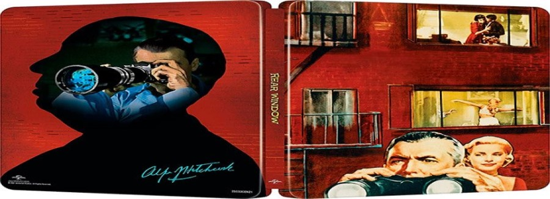

HOBBIES
I am a person who has many hobbies however those that I think characterize me are:
- Basketball: For eight years of my childhood I played basketball. Now I can't play because I broke my knee, but I still love basketball and today I still tuned in.
- Cinematography: Since I was little I always loved cinema, especially old movies. I love black and white movies. I always try to see in At least one new movie every week.
- Lego world: Since I was a child I have always seen my uncle build Legos which led me to develop an interest for them from an early age. Now that I've grown up I've ended up becoming a lego collector.